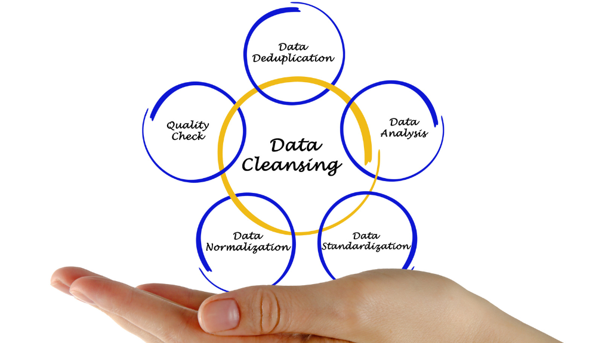
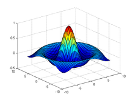
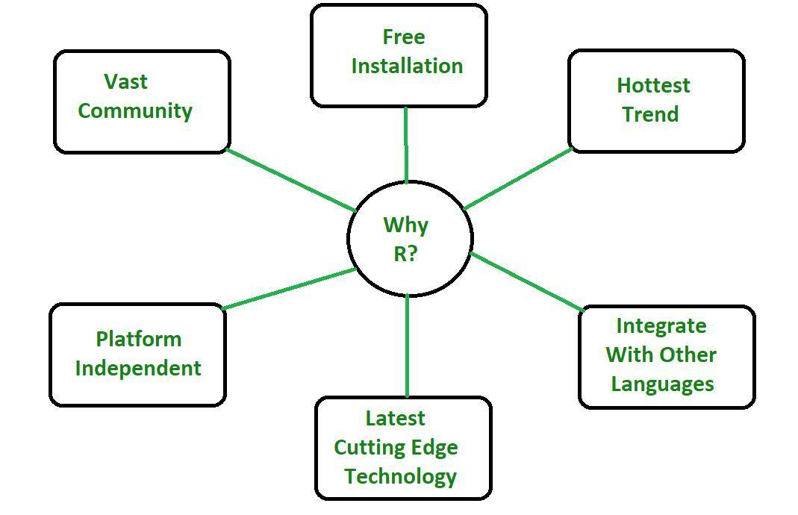
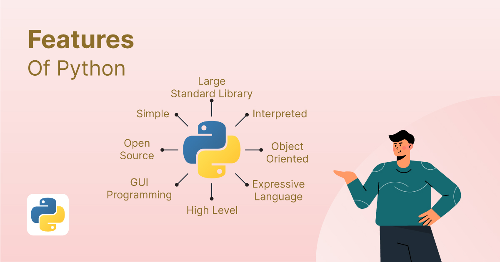
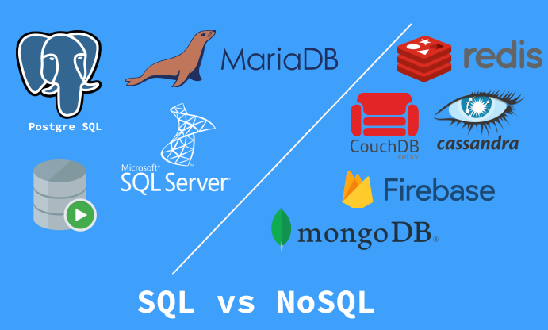
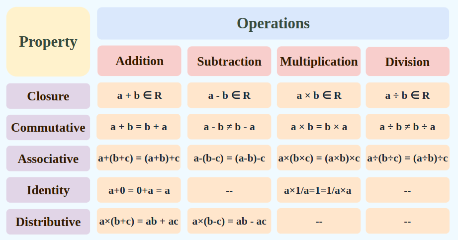
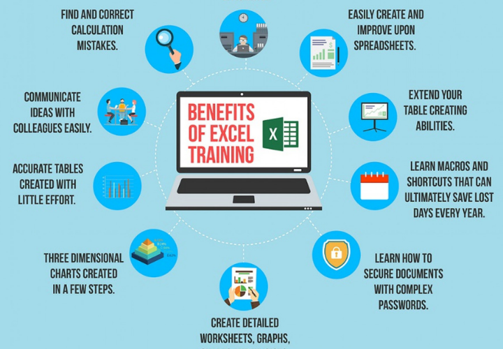
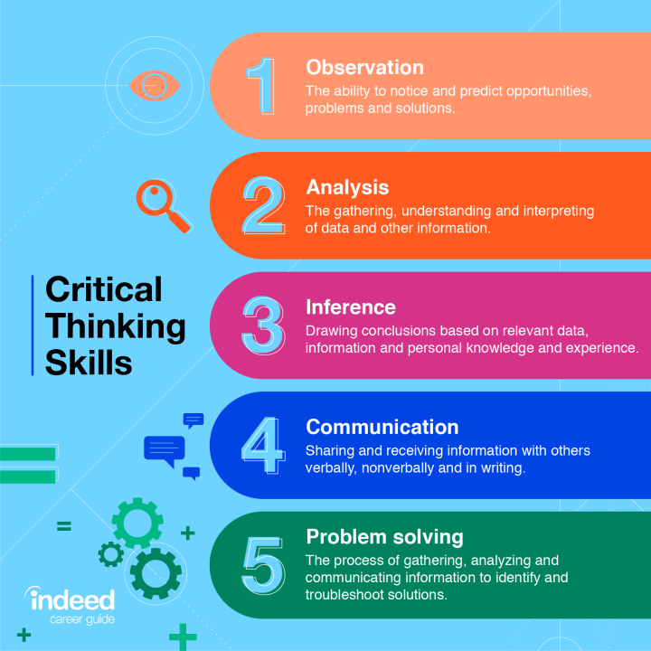
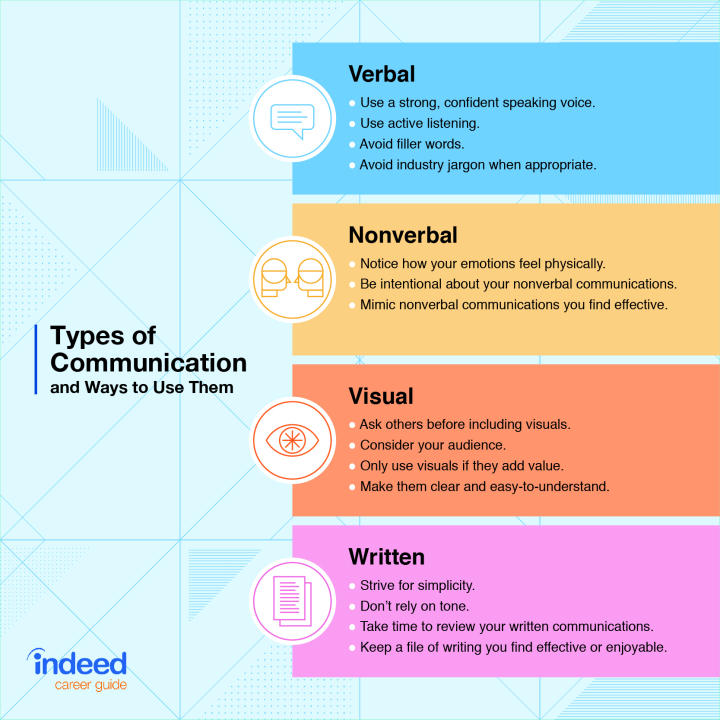
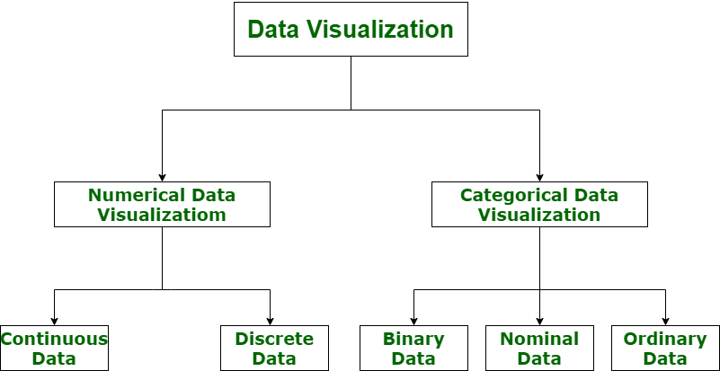

Data cleaning is the process of preparing data for analysis by removing or modifying data that is incorrect, incomplete, irrelevant, duplicated, or improperly formatted. This data is usually not necessary or helpful when it comes to analyzing data because it may hinder the process or provide inaccurate results
MATLAB is a proprietary multi-paradigm programming language and numeric computing environment developed by MathWorks. MATLAB allows matrix manipulations, plotting of functions and data, implementation of algorithms, creation of user interfaces, and interfacing with programs written in other languages
R is a programming language for statistical computing and data visualization. It has been adopted in the fields of data mining, bioinformatics, and data analysis. R. R terminal. Paradigms
Python is a high-level, general-purpose programming language. Its design philosophy emphasizes code readability with the use of significant indentation. Python is dynamically typed and garbage-collected. It supports multiple programming paradigms, including structured, object-oriented and functional programming.
SQL databases use SQL (Structured Query Language). NoSQL databases use JSON (JavaScript Object Notation), XML, YAML, or binary schema, facilitating unstructured data. SQL has a fixed-defined schema, while NoSQL databases are more flexible
Machine learning (ML) is a subdomain of artificial intelligence (AI) that focuses on developing systems that learn—or improve performance—based on the data they ingest. Artificial intelligence is a broad word that refers to systems or machines that resemble human intelligence. Machine learning and AI are frequently discussed together, and the terms are occasionally used interchangeably, although they do not signify the same thing. A crucial distinction is that, while all machine learning is AI, not all AI is machine learning.

Linear Algebra is the branch of mathematics that focuses on the study of vectors, vector spaces, and linear transformations. It deals with linear equations, linear functions, and their representations through matrices and determinants. It has a wide range of application in Physics and Mathematics. It is the basic concept for machine learning and data science. We have explained the Linear Algebra, types of Linear Algebra.
Microsoft Excel is a spreadsheet editor developed by Microsoft for Windows, macOS, Android, iOS and iPadOS. It features calculation or computation
Critical thinking is a kind of thinking in which you question, analyse, interpret, evaluate and make a judgement about what you read, hear, say, or write. The term critical comes from the Greek word kritikos meaning “able to judge or discern”.
Communication is a process that involves sending and receiving messages through the verbal and non-verbal methods. Communication is a two-way means of communicating information in the form of thoughts, opinions, and ideas between two or more individuals with the purpose of building an understanding.
Data visualization is the graphical representation of information and data in a pictorial or graphical format (Visualization of Data could be: charts, graphs, and maps). Data visualization tools provide an accessible way to see and understand trends, patterns in data, and outliers. Data visualization tools and technologies are essential to analyzing massive amounts of information and making data-driven decisions. The concept of using pictures is to understand data that has been used for centuries. General types of data visualization are Charts, Tables, Graphs, Maps, and Dashboards.
